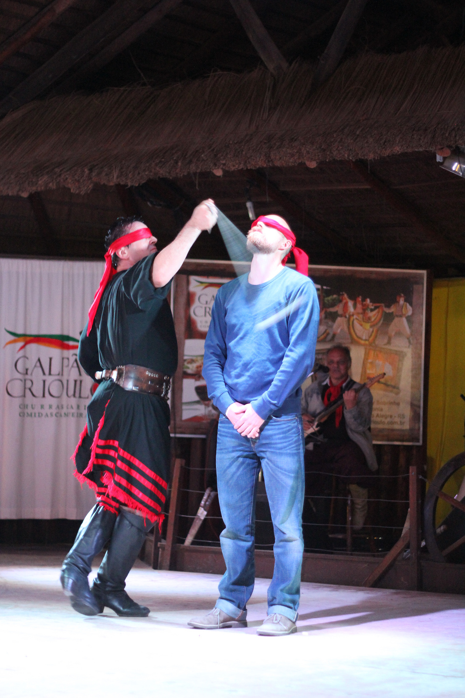
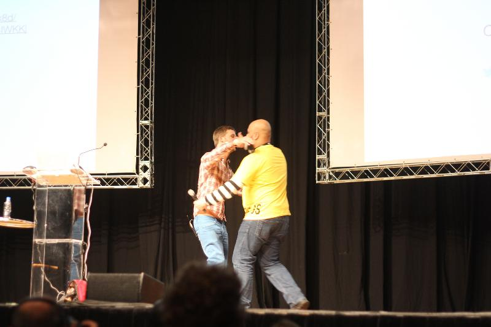

Review por
github.com: /fernandoperigolo e /viniciusalmeida
Utilizando node.js para automação de build e deploy
Performance as a Twitter feature
&& Learning to fly - Twitter Flight and mixin
Where modern front-end tooling has gone
Crowdsourcing Heroku's Node Buildpack
Um futuro chamado Web Components
Bringing the open web and APIs to mobile devices with Firefox OS

How to make mobile apps: Web developer REMIX
Buscando a melhor performance em Aplicativos Móveis com HTML5
The Perf Doctor is In
Ele foi um grande colaborador dessa apresentação, já que pegamos várias fotos no Flickr dele :)
API Sex
O fantástico mundo do JavaScript
Workers of the web

NodeJS, the good, the bad and the ugly
Reactive JavaScript
Programming Style and Your Brain